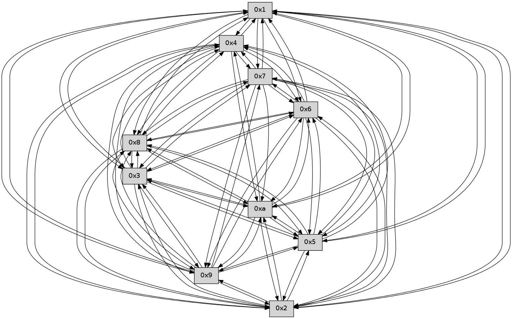

>> << IDX [start] -100 -25 -5 +0 +5 +25 +100 [265.240332127]
 Previous packets
----------------------------------------------------------------------
260.511541 beacon01(faad) #0 coord=01,02,03,04,05,06,07,0a,09,08 cycle=688.0ms assoc
-- color-indic=0 64 2d 8b
260.521524 beacon02(faad) #0 coord=01,02,03,04,05,06,07,0a,09,08 cycle=688.0ms assoc 64 be ba
260.531523 beacon03(faad) #0 coord=01,02,03,04,05,06,07,0a,09,08 cycle=688.0ms assoc 64 c4 f7
260.541526 beacon04(faad) #0 coord=01,02,03,04,05,06,07,0a,09,08 cycle=688.0ms assoc 64 b3 1d
260.551523 beacon05(faad) #0 coord=01,02,03,04,05,06,07,0a,09,08 cycle=688.0ms assoc 64 c9 50
260.561525 beacon06(faad) #0 coord=01,02,03,04,05,06,07,0a,09,08 cycle=688.0ms assoc 64 47 87
260.571525 beacon07(faad) #0 coord=01,02,03,04,05,06,07,0a,09,08 cycle=688.0ms assoc 64 3d ca
260.581528 beacon0a(faad) #0 coord=01,02,03,04,05,06,07,0a,09,08 cycle=688.0ms assoc 64 4c c1
260.591528 beacon09(faad) #0 coord=01,02,03,04,05,06,07,0a,09,08 cycle=688.0ms assoc 64 c2 16
260.601529 beacon08(faad) #0 coord=01,02,03,04,05,06,07,0a,09,08 cycle=688.0ms assoc 64 b8 5b
260.612678 [Hello(3): seq=171 sym=5,7,6,4,2,8,9,10,1 sysInfo= stat=5:15,0,0,0/7:6,0,0,0/6:4,0,0,0/4:12,0,0,0/2:12,0,0,0/8:9,0,0,0/9:3,0,0,0/10:8,0,0,0/1:0,0,0,0]
260.618711 [Hello(2): seq=168 sym=4,5,7,6,3,9,8,10,1 sysInfo= stat=4:8,0,0,0/5:12,0,0,0/7:0,0,0,0/6:3,0,0,0/3:6,0,0,0/9:5,0,0,0/8:3,0,0,0/10:15,0,0,0/1:3,0,0,0]
----------------------------------------------------------------------
261.299675 beacon01(faad) #0 coord=01,02,03,04,05,06,07,0a,09,08 cycle=688.0ms assoc
-- color-indic=0 64 91 8e
261.309657 beacon02(faad) #0 coord=01,02,03,04,05,06,07,0a,09,08 cycle=688.0ms assoc 64 02 bf
261.319659 beacon03(faad) #0 coord=01,02,03,04,05,06,07,0a,09,08 cycle=688.0ms assoc 64 78 f2
261.329659 beacon04(faad) #0 coord=01,02,03,04,05,06,07,0a,09,08 cycle=688.0ms assoc 64 0f 18
261.339658 beacon05(faad) #0 coord=01,02,03,04,05,06,07,0a,09,08 cycle=688.0ms assoc 64 75 55
261.349658 beacon06(faad) #0 coord=01,02,03,04,05,06,07,0a,09,08 cycle=688.0ms assoc 64 fb 82
261.359658 beacon07(faad) #0 coord=01,02,03,04,05,06,07,0a,09,08 cycle=688.0ms assoc 64 81 cf
261.369662 beacon0a(faad) #0 coord=01,02,03,04,05,06,07,0a,09,08 cycle=688.0ms assoc 64 f0 c4
261.379664 beacon09(faad) #0 coord=01,02,03,04,05,06,07,0a,09,08 cycle=688.0ms assoc 64 7e 13
261.389663 beacon08(faad) #0 coord=01,02,03,04,05,06,07,0a,09,08 cycle=688.0ms assoc 64 04 5e
261.400837 [Hello(8): seq=114 sym=5,2,3,4,7,6,9,10,1 sysInfo= stat=5:12,0,0,0/2:12,0,0,0/3:13,0,0,0/4:0,0,0,0/7:10,0,0,0/6:13,0,0,0/9:3,0,0,0/10:0,0,0,0/1:15,0,0,0]
261.403978 [Hello(7): seq=171 sym=2,3,5,6,4,8,9,10,1 sysInfo= stat=2:11,0,0,0/3:11,0,0,0/5:7,0,0,0/6:15,0,0,0/4:12,0,0,0/8:9,0,0,0/9:9,0,0,0/10:8,0,0,0/1:13,0,0,0]
261.407167 [Hello(6): seq=171 sym=2,3,5,4,7,9,8,10,1 sysInfo= stat=2:0,0,0,0/3:13,0,0,0/5:3,0,0,0/4:2,0,0,0/7:6,0,0,0/9:13,0,0,0/8:14,0,0,0/10:11,0,0,0/1:10,0,0,0]
261.412406 [Hello(10): seq=103 sym=6,3,2,5,9,8,4,1 sysInfo= stat=6:5,0,0,0/3:13,0,0,0/2:12,0,0,0/5:13,0,0,0/9:5,0,0,0/8:6,0,0,0/4:9,0,0,0/1:2,0,0,0]
----------------------------------------------------------------------
262.087806 beacon01(faad) #0 coord=01,02,03,04,05,06,07,0a,09,08 cycle=688.0ms assoc
-- color-indic=0 64 55 80
262.097788 beacon02(faad) #0 coord=01,02,03,04,05,06,07,0a,09,08 cycle=688.0ms assoc 64 c6 b1
262.107789 beacon03(faad) #0 coord=01,02,03,04,05,06,07,0a,09,08 cycle=688.0ms assoc 64 bc fc
262.117790 beacon04(faad) #0 coord=01,02,03,04,05,06,07,0a,09,08 cycle=688.0ms assoc 64 cb 16
262.127791 beacon05(faad) #0 coord=01,02,03,04,05,06,07,0a,09,08 cycle=688.0ms assoc 64 b1 5b
262.137789 beacon06(faad) #0 coord=01,02,03,04,05,06,07,0a,09,08 cycle=688.0ms assoc 64 3f 8c
262.147789 beacon07(faad) #0 coord=01,02,03,04,05,06,07,0a,09,08 cycle=688.0ms assoc 64 45 c1
262.157794 beacon0a(faad) #0 coord=01,02,03,04,05,06,07,0a,09,08 cycle=688.0ms assoc 64 34 ca
262.167795 beacon09(faad) #0 coord=01,02,03,04,05,06,07,0a,09,08 cycle=688.0ms assoc 64 ba 1d
262.177795 beacon08(faad) #0 coord=01,02,03,04,05,06,07,0a,09,08 cycle=688.0ms assoc 64 c0 50
262.188677 [Hello(1): seq=80 sym=4,2,9,5,10,3,8,6,7 sysInfo= stat=4:11,0,0,0/2:13,0,0,0/9:1,0,0,0/5:0,0,0,0/10:14,0,0,0/3:8,0,0,0/8:14,0,0,0/6:6,0,0,0/7:6,0,0,0]
262.191189 [Hello(3): seq=172 sym=5,7,6,4,2,8,9,10,1 sysInfo= stat=5:0,0,0,0/7:7,0,0,0/6:5,0,0,0/4:12,0,0,0/2:13,0,0,0/8:10,0,0,0/9:3,0,0,0/10:9,0,0,0/1:0,0,0,0]
262.194134 [Hello(2): seq=169 sym=4,5,7,6,3,9,8,10,1 sysInfo= stat=4:8,0,0,0/5:12,0,0,0/7:1,0,0,0/6:4,0,0,0/3:6,0,0,0/9:5,0,0,0/8:3,0,0,0/10:0,0,0,0/1:3,0,0,0]
262.197825 [Hello(5): seq=172 sym=7,6,4,3,1,9,8,10,2 sysInfo= stat=7:9,0,0,0/6:7,0,0,0/4:6,0,0,0/3:3,0,0,0/1:2,0,0,0/9:4,0,0,0/8:12,0,0,0/10:4,0,0,0/2:6,0,0,0]
262.203634 [Hello(4): seq=172 sym=5,7,6,2,3,9,8,10,1 sysInfo= stat=5:11,0,0,0/7:13,0,0,0/6:4,0,0,0/2:13,0,0,0/3:2,0,0,0/9:5,0,0,0/8:4,0,0,0/10:6,0,0,0/1:2,0,0,0]
----------------------------------------------------------------------
262.875938 beacon01(faad) #0 coord=01,02,03,04,05,06,07,0a,09,08 cycle=688.0ms assoc
-- color-indic=0 64 e9 85
262.885919 beacon02(faad) #0 coord=01,02,03,04,05,06,07,0a,09,08 cycle=688.0ms assoc 64 7a b4
262.895921 beacon03(faad) #0 coord=01,02,03,04,05,06,07,0a,09,08 cycle=688.0ms assoc 64 00 f9
262.905920 beacon04(faad) #0 coord=01,02,03,04,05,06,07,0a,09,08 cycle=688.0ms assoc 64 77 13
262.915921 beacon05(faad) #0 coord=01,02,03,04,05,06,07,0a,09,08 cycle=688.0ms assoc 64 0d 5e
262.925920 beacon06(faad) #0 coord=01,02,03,04,05,06,07,0a,09,08 cycle=688.0ms assoc 64 83 89
262.935922 beacon07(faad) #0 coord=01,02,03,04,05,06,07,0a,09,08 cycle=688.0ms assoc 64 f9 c4
262.945927 beacon0a(faad) #0 coord=01,02,03,04,05,06,07,0a,09,08 cycle=688.0ms assoc 64 88 cf
262.955926 beacon09(faad) #0 coord=01,02,03,04,05,06,07,0a,09,08 cycle=688.0ms assoc 64 06 18
262.965926 beacon08(faad) #0 coord=01,02,03,04,05,06,07,0a,09,08 cycle=688.0ms assoc 64 7c 55
262.977403 [Hello(8): seq=115 sym=5,2,3,4,7,6,9,10,1 sysInfo= stat=5:13,0,0,0/2:13,0,0,0/3:14,0,0,0/4:1,0,0,0/7:11,0,0,0/6:14,0,0,0/9:3,0,0,0/10:1,0,0,0/1:0,0,0,0]
262.980411 [Hello(7): seq=172 sym=2,3,5,6,4,8,9,10,1 sysInfo= stat=2:12,0,0,0/3:12,0,0,0/5:8,0,0,0/6:0,0,0,0/4:13,0,0,0/8:9,0,0,0/9:9,0,0,0/10:9,0,0,0/1:14,0,0,0]
262.982990 [Hello(9): seq=115 sym=5,2,3,4,7,6,8,10,1 sysInfo= stat=5:3,0,0,0/2:4,0,0,0/3:5,0,0,0/4:15,0,0,0/7:11,0,0,0/6:4,0,0,0/8:5,0,0,0/10:5,0,0,0/1:11,0,0,0]
262.989501 [Hello(6): seq=172 sym=2,3,5,4,7,9,8,10,1 sysInfo= stat=2:1,0,0,0/3:14,0,0,0/5:4,0,0,0/4:3,0,0,0/7:6,0,0,0/9:13,0,0,0/8:14,0,0,0/10:12,0,0,0/1:11,0,0,0]
262.998104 [Hello(10): seq=104 sym=6,3,2,5,9,8,4,1 sysInfo= stat=6:5,0,0,0/3:14,0,0,0/2:13,0,0,0/5:14,0,0,0/9:5,0,0,0/8:6,0,0,0/4:10,0,0,0/1:3,0,0,0]
----------------------------------------------------------------------
263.664069 beacon01(faad) #0 coord=01,02,03,04,05,06,07,0a,09,08 cycle=688.0ms assoc
-- color-indic=0 64 6c 3b
263.674052 beacon02(faad) #0 coord=01,02,03,04,05,06,07,0a,09,08 cycle=688.0ms assoc 64 ff 0a
263.684052 beacon03(faad) #0 coord=01,02,03,04,05,06,07,0a,09,08 cycle=688.0ms assoc 64 85 47
263.694053 beacon04(faad) #0 coord=01,02,03,04,05,06,07,0a,09,08 cycle=688.0ms assoc 64 f2 ad
263.704053 beacon05(faad) #0 coord=01,02,03,04,05,06,07,0a,09,08 cycle=688.0ms assoc 64 88 e0
263.714053 beacon06(faad) #0 coord=01,02,03,04,05,06,07,0a,09,08 cycle=688.0ms assoc 64 06 37
263.724053 beacon07(faad) #0 coord=01,02,03,04,05,06,07,0a,09,08 cycle=688.0ms assoc 64 7c 7a
263.734058 beacon0a(faad) #0 coord=01,02,03,04,05,06,07,0a,09,08 cycle=688.0ms assoc 64 0d 71
263.744056 beacon09(faad) #0 coord=01,02,03,04,05,06,07,0a,09,08 cycle=688.0ms assoc 64 83 a6
263.754059 beacon08(faad) #0 coord=01,02,03,04,05,06,07,0a,09,08 cycle=688.0ms assoc 64 f9 eb
263.765240 [Hello(1): seq=81 sym=4,2,9,5,10,3,8,6,7 sysInfo= stat=4:12,0,0,0/2:14,0,0,0/9:2,0,0,0/5:1,0,0,0/10:15,0,0,0/3:9,0,0,0/8:15,0,0,0/6:7,0,0,0/7:7,0,0,0]
263.769837 [Hello(5): seq=173 sym=7,6,4,3,1,9,8,10,2 sysInfo= stat=7:10,0,0,0/6:8,0,0,0/4:7,0,0,0/3:3,0,0,0/1:2,0,0,0/9:5,0,0,0/8:13,0,0,0/10:5,0,0,0/2:6,0,0,0]
263.773487 [Hello(3): seq=173 sym=5,7,6,4,2,8,9,10,1 sysInfo= stat=5:1,0,0,0/7:8,0,0,0/6:6,0,0,0/4:13,0,0,0/2:14,0,0,0/8:11,0,0,0/9:4,0,0,0/10:10,0,0,0/1:0,0,0,0]
263.776051 [Hello(4): seq=173 sym=5,7,6,2,3,9,8,10,1 sysInfo= stat=5:11,0,0,0/7:14,0,0,0/6:5,0,0,0/2:13,0,0,0/3:2,0,0,0/9:6,0,0,0/8:5,0,0,0/10:7,0,0,0/1:2,0,0,0]
263.783533 [Hello(2): seq=170 sym=4,5,7,6,3,9,8,10,1 sysInfo= stat=4:9,0,0,0/5:13,0,0,0/7:2,0,0,0/6:5,0,0,0/3:6,0,0,0/9:6,0,0,0/8:4,0,0,0/10:1,0,0,0/1:3,0,0,0]
----------------------------------------------------------------------
264.452200 beacon01(faad) #0 coord=01,02,03,04,05,06,07,0a,09,08 cycle=688.0ms assoc
-- color-indic=0 64 d0 3e
264.462181 beacon02(faad) #0 coord=01,02,03,04,05,06,07,0a,09,08 cycle=688.0ms assoc 64 43 0f
264.472183 beacon03(faad) #0 coord=01,02,03,04,05,06,07,0a,09,08 cycle=688.0ms assoc 64 39 42
264.482183 beacon04(faad) #0 coord=01,02,03,04,05,06,07,0a,09,08 cycle=688.0ms assoc 64 4e a8
264.492182 beacon05(faad) #0 coord=01,02,03,04,05,06,07,0a,09,08 cycle=688.0ms assoc 64 34 e5
264.502184 beacon06(faad) #0 coord=01,02,03,04,05,06,07,0a,09,08 cycle=688.0ms assoc 64 ba 32
264.512183 beacon07(faad) #0 coord=01,02,03,04,05,06,07,0a,09,08 cycle=688.0ms assoc 64 c0 7f
264.522189 beacon0a(faad) #0 coord=01,02,03,04,05,06,07,0a,09,08 cycle=688.0ms assoc 64 b1 74
264.532188 beacon09(faad) #0 coord=01,02,03,04,05,06,07,0a,09,08 cycle=688.0ms assoc 64 3f a3
264.542188 beacon08(faad) #0 coord=01,02,03,04,05,06,07,0a,09,08 cycle=688.0ms assoc 64 45 ee
264.553962 [Hello(10): seq=105 sym=6,3,2,5,9,8,4,1 sysInfo= stat=6:5,0,0,0/3:15,0,0,0/2:14,0,0,0/5:15,0,0,0/9:5,0,0,0/8:6,0,0,0/4:11,0,0,0/1:4,0,0,0]
264.556824 [Hello(8): seq=116 sym=5,2,3,4,7,6,9,10,1 sysInfo= stat=5:14,0,0,0/2:14,0,0,0/3:15,0,0,0/4:2,0,0,0/7:12,0,0,0/6:15,0,0,0/9:4,0,0,0/10:2,0,0,0/1:1,0,0,0]
264.564627 [Hello(7): seq=173 sym=2,3,5,6,4,8,9,10,1 sysInfo= stat=2:13,0,0,0/3:13,0,0,0/5:9,0,0,0/6:1,0,0,0/4:14,0,0,0/8:9,0,0,0/9:10,0,0,0/10:10,0,0,0/1:15,0,0,0]